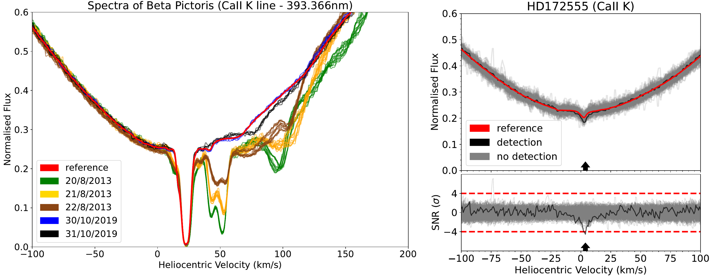

About Me
Education:
PhD of Physics & Astronomy at University of Exeter
MSc by Research in Physics at University of Warwick
BSc in Physics at University of Warwick
Research Interests:
Structure of debris discs, planet-disc interactions, exocomet transit detection, debris disc observations
Other Interests:
Other than my interest in Astronomy, I have been playing basketball competitively for 15 years in national/county/university leagues.
From 2017 to 2022, I have been involved in the Warwick Basketball Club, taking different positions as the years go by
(Charity Officer 2018-2019, Men's Teams Captain 2020-2021, Advisor to the Executive Commitee 2021-2022).
I was also a Warwick Sport Activator, encouraging other students to be more active, by running casual, inclusive and beginner
friendly basketball sessions.
My growing experience in data manipulation has strengthened my interest in sport data science, especially linked to basketball.
On the side, I am familiarising myself with new analytic tools more specialised towards sports analytics
(Coursera course if interested).
Some of my personal side projects include trying to predict the winning team of future basketball seasons according to old data,
or predicting future MVP/ROY according to archival data.
I have always been fascinated by the marine environment, with experience working in the yachting industry, as well as my continual
enthusiasm to discover the underwater world (scuba diving, freediving, spear fishing).
Research
Direct Imaging of planets around HD107146, HD92945, HD206893
Project supervisor: Sebastian Marino
This project aims to study the structure of the debris dics of these 3 stars that were previously discovered with ALMA
(Marino et al. 2018, 2019, 2020). These debris discs are seen to have gaps that suggest the presence of planet-disc interactions
where Neptune-like planets could carve such observed annular gaps. With JWST MIRI data we aim to detect these gap carving planets
and when combined with the disc structure information, we will be able to constrain both the orbits and dynamical history of these systems.
Automated Search for Spectroscopic Exocomet Transits
Project supervisor: Grant Kennedy, Paul Strøm, David Brown

As part of my masters, we developed an automated pipeline that searches for signs of exocomet transits in spectroscopy data.
Being guided by the multiple exocomet transits detected around the archetypal star Beta Pictoris, exocomets can be identified by
transient absorption features in specific atomic species, such as the commonly used ionised Calcium doublet. The aim of this project
is to overcome the typical bias towards sample of stars with detected debris discs (increasing the chance of detecting exocomets), and
evaluate the occurrence rate of exocomet transits + determine any trends in host stars using a large and more diverse sample of stars,
ie. the entire HARPS archive. Paper in prep.
Self-Organising Map (Summer project)
This summer project introduced me to an unsupervised Machine Learning classification algorithm called a Self-Organising Map (SOM)
that we used to classify stellar spectra according to their different spectral shapes. This was an attempt to reduce the
number of false positive detections in our search for exocomet transits. The main idea is that stars showing similar features,
eg. variable stellar activity, would be classified together, providing an easier method to identify and filter specific sources
of false positive exocomet detections.
Talks & Conferences
ESPF seminar - STScI, Baltimore, USA, Dec 2022 [invited speaker]
link to recorded talk
Debris Disc group - IoA, Cambridge, UK, Nov 2022 [invited speaker]
Debris Discs: At Home and Abroad - Jena, Germany, Aug 2022 [talk]
National Astronomy Meeting - University of Warwick, UK, Jul 2022 [participation]
Midlands Disc Meeting - University of Warwick, UK, Apr 2022 [talk]
Undergraduate Research Support Scheme - Warwick, UK, Dec 2021 [poster]
FIDLE: Formation Introduction au Deep Learning - CNRS, FR, 2021 [virtual workshop]
Contact
Feel free to email me, I am more than happy to discuss about my work!
Email: rb941@exeter.ac.uk
Address:
Physics Building, Streatham Campus,
University of Exeter, North Park Road, EX4 4QL, Exeter, UK